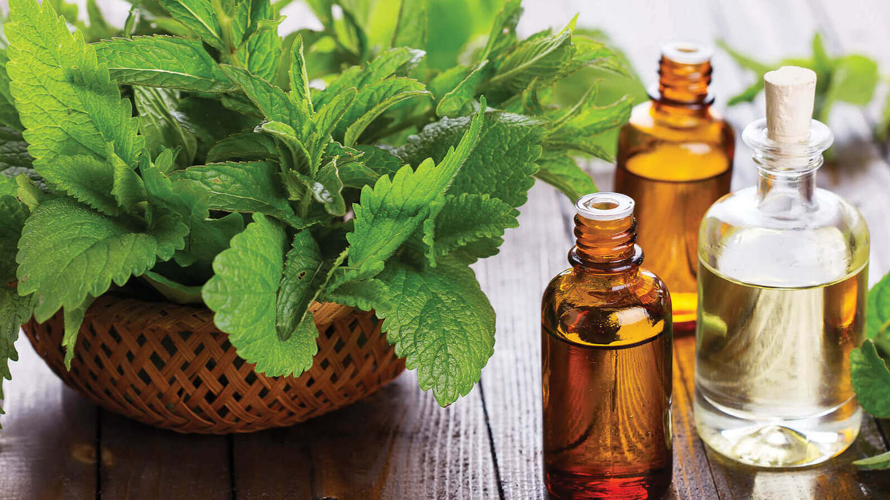
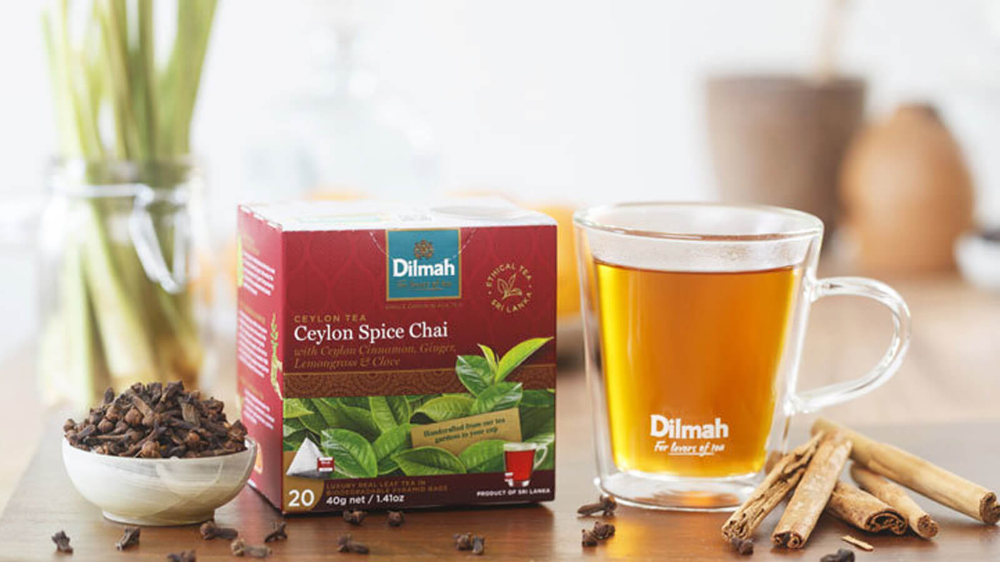

|  |
DABUR LANKA PVT LTD
Dabur India Ltd is one of India’s leading FMCG Companies with Revenues of over Rs 7,680 Crore & Market Capitalisation of over Rs 48,800 Crore.
Building on a legacy of quality and experience of over 133 years, Dabur is today India’s Most Trusted Name and the World’s Largest Ayurvedic and Natural Health Care Company ......
Read more .. |
 |
RENUKA AGRI FOODS PLC
RENUKA HOLDINGS PLC is a diversified conglomerate listed on the Colombo Stock Exchange.
It is the holding company for subsidiaries engaged in Agri Food Exports (Plantations, Manufacturing, Global Marketing), Dairy, FMCG, Automotive, Investments & Services.
The group is Sri Lanka’s leading manufacturer & exporter of Coconut based food & beverage products with own Organic certified plantations; with over a century of experience in the Tea industry ......
Read more .. |
|  |
DILMAH CEYLON TEA COMPANY PLC
Dilmah is unique; a brand that is founded on a passionate commitment to quality and authenticity in tea, it is also a part of a philosophy that goes beyond commerce in seeing business as a matter of human service.
Tea is Nature’s gift to mankind. A beverage that heals, protects and refreshes, it is also infinite in variety, changing subtlety with the natural alchemy of sunshine, soils, wind, rain and temperature ......
Read more .. |